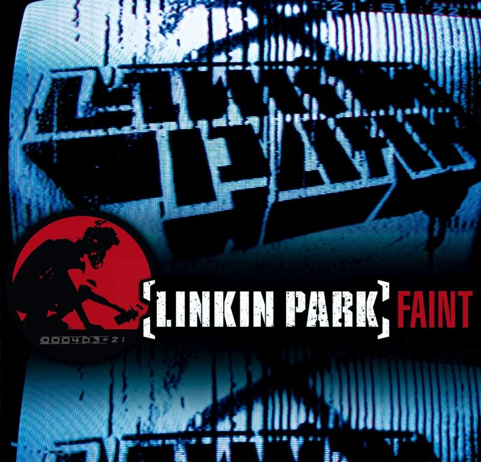

MP3 - Media calidad
OGG - Baja calidad
WAV - Mala calidad
WAV - Buena calidad
FLAC - Máxima calidad
OGG - Media calidad
Controles Globales
Diferencias :)
| Formato | Calidad | Peso | Casos de uso |
|---|---|---|---|
| MP3 | Media | Mediano | Streaming, musica |
| OGG | Baja | Pequeño | Web y juegos |
| WAV | Mala | Grande | Archivos de referencia |
| WAV | Alta | Muy grande | Edicion profesional |
| FLAC | Maxima | Grande | Archivar musica sin perdidas |
| OGG | Media | Mediano | Mejor alternativa a MP3 |